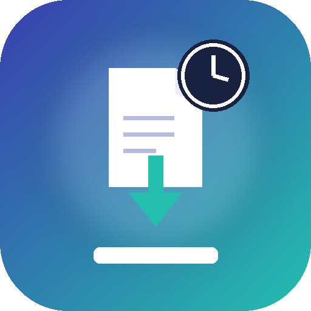

Know exactly who downloaded which file, from which record, and when — automatically, with zero setup.

No buttons to click, no workflow to change. Every real download is captured silently in the background the moment it happens.
Tracks attachments, chatter documents, printed/downloaded PDF & XLSX reports, and spreadsheet data exports from list views.
Every entry records the user, exact timestamp, file name, size, mime type, IP address, and a link back to the source record.
Pivot and graph views let you spot download trends by user, by day, or by file type in a couple of clicks.
Two access levels: regular users can optionally see only their own downloads, while managers see the complete company-wide log.
Set an automatic cleanup policy in days, or clear old records manually at any time with a one-click wizard.
Add Download History Manager from the Apps menu. No configuration is required.
Anyone downloads an attachment, prints/downloads a report, or exports a list to XLSX/CSV — exactly as before.
The download is recorded in the background with the user, file, source record and timestamp.
Open the Download History menu to search, filter, group, or analyze the full history on a dashboard.
| Field | Description |
|---|---|
| Downloaded By | The Odoo user who triggered the download. |
| Download Date | Exact date and time the file was downloaded. |
| File Name & Type | Original file name, and whether it's an attachment, image, report, or data export. |
| File Size & Mime Type | Size in a human-readable format (KB/MB) and the file's mime type. |
| Source Record | The model and record the file belongs to (e.g. an invoice, a project task), with a one-click link back to it. |
| IP Address | The IP address the download request came from. |
We're happy to help with configuration, custom fields, or integrating this with your own audit workflow.
Support: vsmanoj144@gmail.com